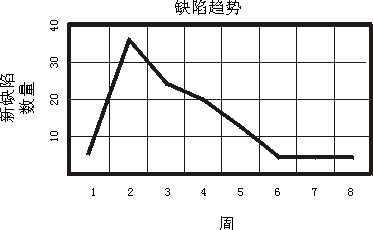

| 概念：测试的关键评估 |
 |
|
简介测试的关键评估包括覆盖和质量评估。 测试覆盖是对测试完整性的评估，它所基于的是测试需求和测试用例的覆盖所指出的测试覆盖以及执行代码的覆盖所指出的测试覆盖。 质量是对测试目标（系统或要测试的应用程序）的可靠性、稳定性和性能的评估。质量所基于的是评估测试结果和分析在测试过程中找出的变更请求（缺陷）。 覆盖率评估覆盖率度量值提供了对“测试的完整程度如何？”这一问题的回答。最为常用的覆盖率评估是根据软件需求和源代码的覆盖率作出的。基本上，测试覆盖是任何关于需求（基于需求）或关于代码的设计与实施标准（基于代码）的完整性评估，例如验证用例（基于需求）或执行所有代码行（基于代码）。 任何系统的测试任务都至少基于一个测试覆盖率策略。覆盖策略通过陈述测试的总体目的来指导测试用例的设计。这样的覆盖策略陈述可以简单到表述为“验证所有性能”。 如果需求有完整的编列，那么基于需求的覆盖策略可能足以产生可量化的测试完整性评估。例如，如果已经指出所有性能测试需求，那么可从测试结果获得评估；例如，已经验证 75% 的性能测试需求。 如果应用基于代码的覆盖，那么就按照测试执行了多少源代码来制定测试策略。对安全至上的系统而言，这种测试覆盖策略非常重要。 可手动获取这两种评估（使用下两个标题中的等式），或使用测试自动化工具计算它们。 基于需求的测试覆盖率基于需求的测试覆盖要在测试生命周期中评估多次，来确定测试生命周期中里程碑上的测试覆盖，例如计划的、实施的、执行的和成功的测试覆盖。
将以上比率转化为百分比，支持以下关于基于需求的测试覆盖的陈述：
这个有意义的测试覆盖陈述可与定义的成功标准相对照。如果达不到标准，那么该陈述可提供作为预测还剩多少测试工作的基础。 基于代码的测试覆盖率基于代码的测试覆盖对照评估测试中有多少代码已经执行和有多少代码有待执行。代码覆盖可以基于控制流（语句、分支或路径）或者数据流。
使用以下等式计算基于代码的测试覆盖：
将此比率转化为百分比，支持以下关于基于代码的测试覆盖的陈述：
这个有意义的测试覆盖陈述可与定义的成功标准相对照。如果达不到标准，那么该陈述可提供作为预测还剩多少测试工作的基础。 评估感觉到的质量尽管评估测试覆盖提供了对测试工作完整性程度的评估，但是评估在测试过程中发现的缺陷可最清楚地指明软件质量，因为它已经在实际中体验到。这一对质量的感觉可以用来推断软件系统作为一个整体的总体质量。“感觉到的软件质量”用于评估软件在多大程度上满足了施加给软件的需求，因此，在这样的环境下，缺陷被认为是某种类型的变更请求 － 在变更请求中，测试目标未能满足软件需求。 缺陷评估可基于范围广泛的方法，从简单的缺陷计数一直到严格的统计建模。 在严格的评估中，事先假定测试过程中缺陷达到多大的到达率或发现率。常见模型假定该比率遵循泊松分发。然后将关于缺陷率的实际数据与该模型相比照。由此得出的评估可估计当前的软件可靠性，并预测如果继续测试和除去缺陷，可靠性又会如何提高。这个评估被描述为“软件可靠性提高建模”，现今它是一个在积极研究中的领域。由于这种类型的评估缺乏工具支持，因此您需要在使用此方法的成本和所得的益处之间仔细平衡。 缺陷分析涉及分析缺陷在一个或多个与缺陷相关的属性的值上的分发情况。缺陷分析指明了软件的可靠性。 在缺陷分析中，通常分析四个主要的缺陷属性：
可创建“缺陷趋势”图或报告，将缺陷计数作为时间函数来报告。缺陷计数还可以在“缺陷密度报告”中作为一个由一个或多个缺陷属性决定的函数进行报告，就像严重性或状态一样。这些类型的分析展示了缺陷趋势或揭示软件可靠性的缺陷分发情况。 只有经过确认的缺陷才会包含在这种分析中。并非所有报告的缺陷都表示实际缺陷；某些可能是项目范围之外的扩展请求，或可能出于描述已经报告过的缺陷。但是，仍然值得查看并分析：为什么会报告如此多的、重复或未确认的缺陷。 缺陷报告Rational Unified Process 建议使用基于多个报告类别的缺陷评估，如下所示：
很多这些报告都可帮助评估软件质量。它们在与“测试结果和进度报告”结合进行分析时用处最大（“测试结果和进度报告”用于显示为测试中的应用程序通过一系列迭代和测试周期而执行的测试的结果）。通常的测试标准包含某个陈述，说明在特定类别（例如严重性类）中可容许的开立缺陷数目，这个陈述使用缺陷分发评估就可轻易检查。通过按测试激发器对该分发进行排序或分组，评估可着重于重要关注领域。 正常情况下，有效地生成这种报告要求有工具支持。 缺陷密度报告缺陷状态与优先级为每个缺陷指定优先级。设置四个级别的优先级通常是实用、足够的，例如：
注意：成功测试的标准可表述为这些优先级上的缺陷分发情况应当如何。例如，成功测试的标准可以是“无优先级为 1 的缺陷并且开立的优先级为 2 的缺陷少于 5 个”。应生成如下所示的缺陷分发图。
很明显没有达到标准。按测试标准要求，此图必须包含过滤器以仅显示开立的缺陷。 缺陷状态与严重性“缺陷严重性报告”显示了每个严重性类有多少缺陷，例如致命错误、未执行的主要功能、较小的错误。 缺陷状态与在实施模型中的位置“缺陷来源报告”显示了元素缺陷在“实施”模型中的分布情况。 缺陷熟化报告“缺陷熟化分析”很好的反馈了测试和除去缺陷任务的有效性。例如，如果大部分较旧的、未解决的缺陷处于待验证状态，这可能意味着在重新测试工作中未应用足够的资源。 缺陷趋势报告“缺陷趋势报告”指出缺陷率并特别清楚地描述测试的状态。缺陷趋势在测试周期中遵循相当可预测的模式。在周期早期，缺陷率快速上升，然后到达高峰，之后随着时间的过去以较慢的速率下降。  为找出问题，可根据这个趋势复审项目的时间安排情况。例如，如果缺陷率在四周测试周期的第三周中仍然呈上升趋势，那么很明显，项目没有按日程进行。 这种简单的趋势分析的假设条件是及时修正缺陷然后在随后的工作版本中对这些缺陷进行测试，这样结束缺陷的比率应遵循与找出缺陷的比率相同的概况。如果没有及时修正并测试，就表示缺陷解决过程出现问题；缺陷修正资源或用于重新测试和验证修正的资源可能不足。
在此报告中反映的趋势显示：在项目开始时，很快就发现并开立新缺陷，然后这些缺陷随着时间的过去呈下降趋势。开立缺陷的趋势与新缺陷的趋势相似，但是稍微落后。因为开立的缺陷不断被修正和验证，所以结束缺陷的趋势随着时间的过去持续上升。这些趋势证明工作是成功的。 如果您的趋势与正确趋势出现较大的偏差，它们可能表示出现问题，并指出何时需要将补充的资源应用到特定的开发区域或测试区域。 当与测试覆盖的评估结合时，缺陷分析可提供非常出色的评估，以供作为测试完成标准的基础。 性能评估有几项评估用来评价测试目标的性能行为，以及用来专注于捕获与行为相关的数据（例如，响应时间、时间安排概要文件、执行流程、操作可靠性和限制）。基本上，这些评估在“评估测试”任务中评价，但是有某些性能评估在“执行测试”任务中被用来评估测试进度和状态。 主要的性能评估包括：
动态监视动态监视在测试执行过程中提供实时显示和报告（一般以直方图或图表形式提供）。该报告通过显示测试脚本的当前状况、状态和进度，监视或评估性能测试的执行。
例如，在上述的直方图中，有 80 个测试脚本执行同一个用例。在这个图中，14 个测试脚本处于“空闲”状态，12 个处于“查询”状态，34 个处于“SQL 执行”状态，4 个处于“SQL 连接”状态，16 个处于“其他”状态。随着测试的进行，您会看到每个状态中的脚本数目发生改变。显示的输出将典型性地是正在正常执行并处于执行中途的测试执行。但是，如果测试脚本在测试执行过程中保持一种状态或不显示有什么更改，那么这可能表示测试执行出现问题或者需要实施或评价其他性能评估。 响应时间和吞吐量报告“响应时间和吞吐量报告”正如它们的名称所含意思，用于评估及计算与时间和吞吐量（所处理事务的数目）相关的性能行为。通常，这些报告以图的形式显示，其中“y”轴表示响应时间（或事务数目），“x”轴表示事件。
计算并显示统计信息（例如数据值的平均偏差和标准偏差）作为对显示实际性能行为的补充，这经常大有帮助。 百分点报告“百分点报告”通过为收集的数据类型显示填充百分点值，来提供另一种性能统计计算。
比较报告很重要的一点是将一个性能测试执行的结果与另一个性能测试执行的结果相比较，这样您可以评估两次测试执行之间所作更改对性能行为的影响。使用“比较报告”可显示两组数据（每组代表不同的测试执行）之间的差异或很多个测试执行之间呈现的趋势。 跟踪和概要信息报告当性能行为不可接受或性能监视指出可能存在瓶颈时（例如测试脚本相当长的时间保持一种给定状态），跟踪报告可能是最有价值的报告。“跟踪和概要信息报告”用于显示较低级别的信息。该信息包括参与者和测试目标之间的消息、执行流程、数据访问以及功能和系统调用。 |

© Copyright IBM Corp. 1987, 2006. All Rights Reserved. |